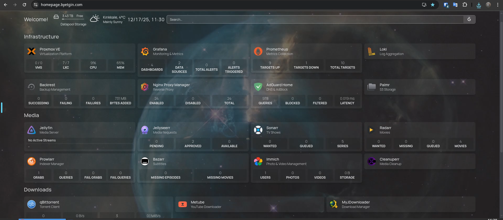
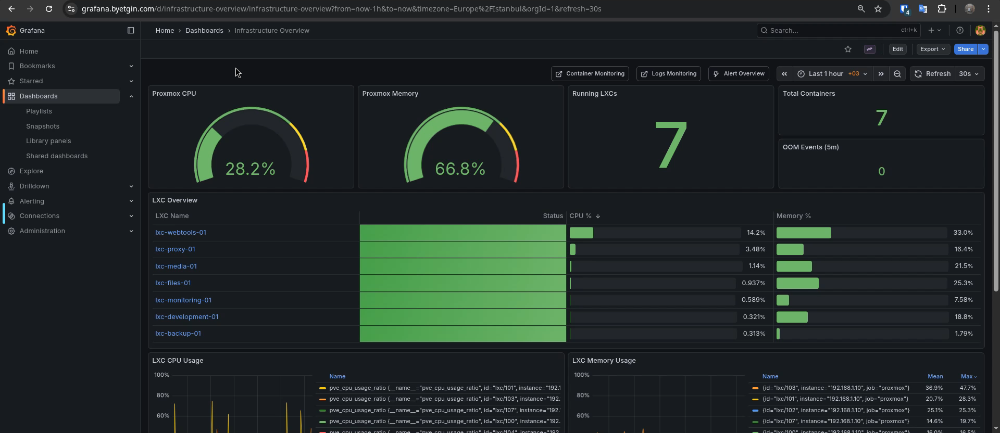

EN / TR
Proxmox Homelab Automation
My personal homelab where I simulate a production environment. 40+ Docker containers, custom Bash automation, and enterprise-grade security.
40+ Services
~3K Lines Bash

Centralized Command Center
Infrastructure as Code
I built a setup where I define everything in one YAML file (stacks.yaml), and scripts handle the installation automatically.
Single Source of Truth
Manage all containers and networks in stacks.yaml. If it's not there, it doesn't exist.
Idempotency
The installer script can run multiple times without breaking anything, only applying necessary changes.
Security & Secrets Management
I treat this homelab like a real production server. No open ports, and all API keys are encrypted in the repo.
AES-256 Encryption (OpenSSL)
Sensitive keys are stored as .env.enc in Git, encrypted with OpenSSL.
Fail2Ban Integration
Fail2Ban runs locally to block brute-force attempts on internal services.
Backup & Recovery
Mix of local snapshots for quick fixes and encrypted cloud backups for disasters.
Layer 1: ZFS Snapshots
Managed by Sanoid. Seconds-level recovery from accidental deletion.
Layer 2: Cloud Archival
Backrest creates encrypted snapshots, synced to Google Drive via rclone.
Observability & Logs
A monitoring stack to see everything in one place: Prometheus, Loki, and Grafana.

Operational Visibility
Network Topology
Public Internet
Roaming Device
Encrypted Cloudflare Tunnel
cloudflared
→
Nginx Proxy
Live Inventory
Systems Operational
Loading infrastructure data...
Architectural Decisions
Why not Kubernetes?
For a single-node environment, Kubernetes introduces significant overhead. Docker Compose maintains native performance.
Why Bash for IaC?
Modular Bash scripts stay close to the OS, ensuring full reproducibility on Proxmox without external dependencies.